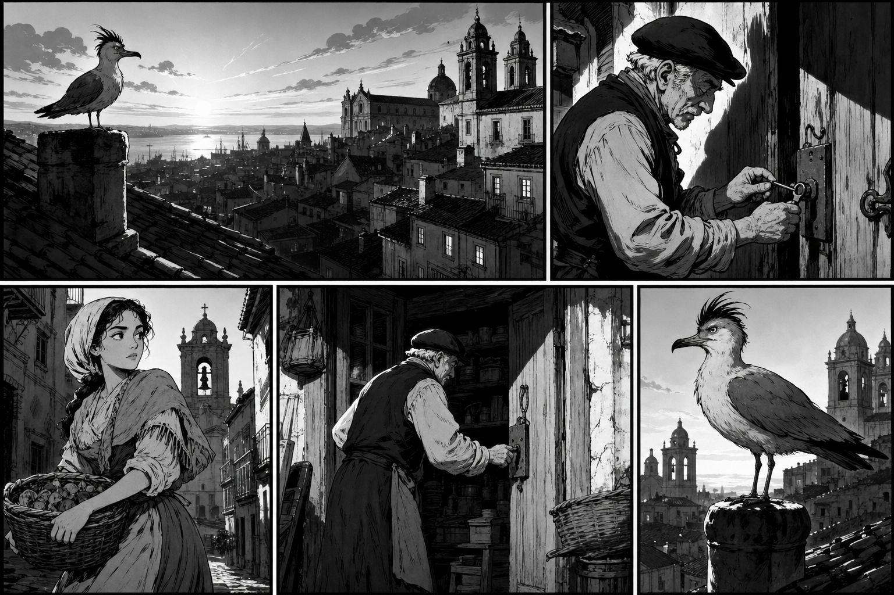
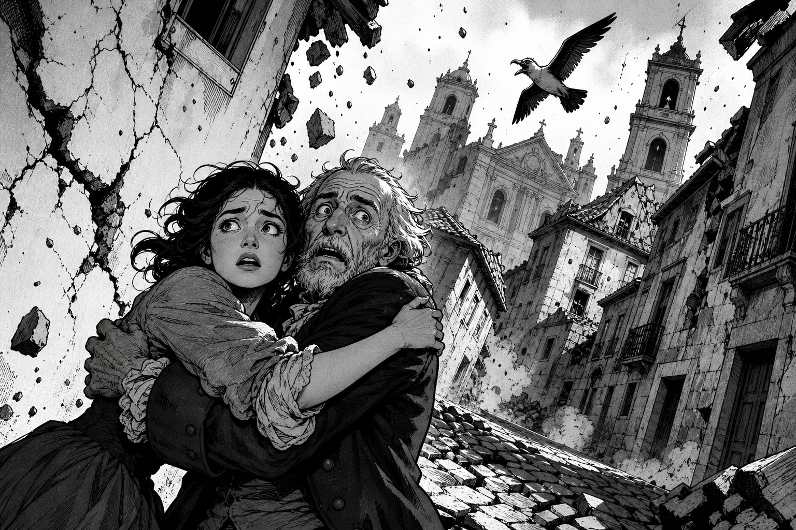
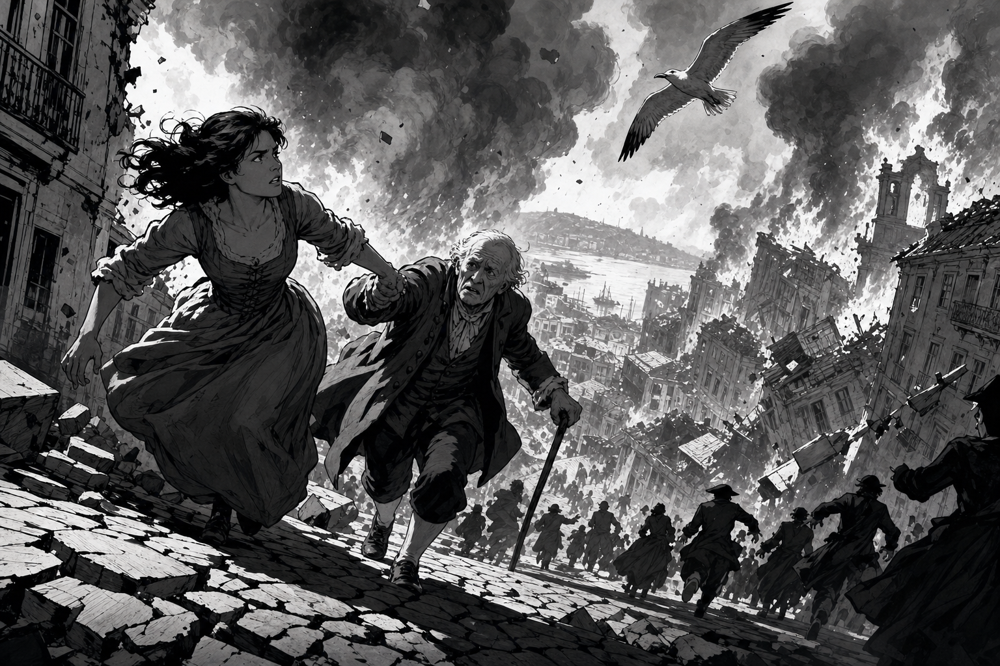
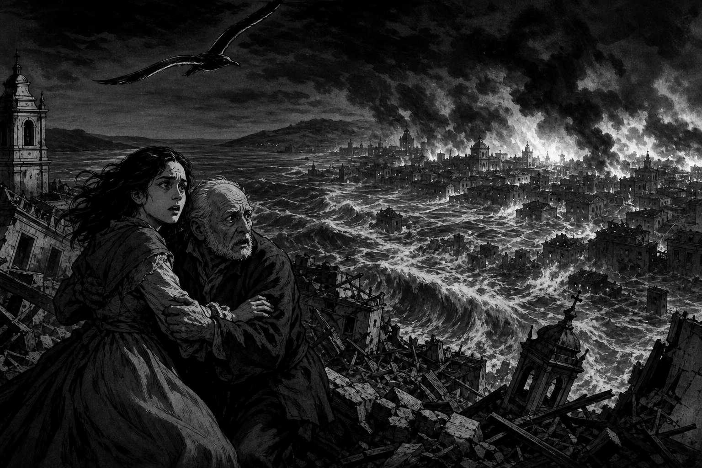
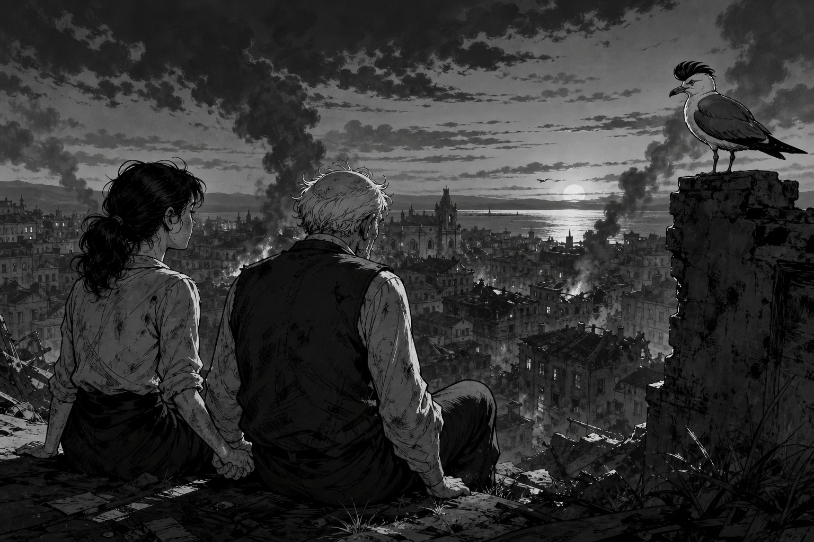

GaivotaHoje a cidade está cheia de sinos. Eu escuto tudo.
ManuelLeonor, vamos à missa. É Dia de Todos os Santos.
LeonorSim, avô. Levo o pão e as velas.
O Terramoto · 2/5
Rising action

LeonorAvô… o chão…
ManuelSegura-te a mim!
GaivotaO chão tremeu. A cidade gritou.
O Terramoto · 3/5
Turning point

HomemFogo! Fogo nas casas!
LeonorCorre, avô! Para o alto!
ManuelNão olhes para trás!
O Terramoto · 4/5
Consequence

LeonorA água… a água sobe!
ManuelFica aqui. Estamos longe do rio.
GaivotaO mar veio à cidade. Eu voei mais alto.
O Terramoto · 5/5
Resolution

LeonorAinda estamos aqui.
ManuelSim. Amanhã… recomeçamos.
GaivotaA cidade caiu. As pessoas ficaram.
Study pack
100 new words · EN
Study pack — O Terramoto
How to use: Read the comic once without translating. Then check the glossary only for stuck words. Answer the questions aloud in Portuguese if you can.
1. Glossary (100) — PT → EN
terramotoearthquake
cidadecity
sinobell
missamass (church service)
Dia de Todos os SantosAll Saints' Day
avôgrandfather
pãobread
velacandle
chãoground / floor
tremerto shake / tremble
segurarto hold on
gritarto shout / scream
fogofire
casahouse
correrto run
altohigh / uphill
olharto look
trásbehind / back
águawater
subirto rise / go up
rioriver
longefar
marsea
voarto fly
amanhãtomorrow
recomeçarto begin again
cairto fall
pessoaperson
ficarto stay / remain
escutarto listen
cheiofull
hojetoday
tudoeverything
levarto take / bring
poeiradust
paredewall
rachaduracrack
pedrastone
ruastreet
fumaçasmoke
perigodanger
medofear
famíliafamily
sobrevivirto survive
silênciosilence
noitenight
entardecerdusk
ruínaruin
destruirto destroy
salvarto save
ajudahelp
vizinhoneighbour
igrejachurch
telhadoroof
chaminéchimney
cestabasket
chavekey
abrirto open
fecharto close
apressarto hurry
ouvirto hear
verto see
sentirto feel
partirto leave
quebrarto break
queimarto burn
afogarto drown
escaparto escape
descerto go down
esperarto wait / to hope
acreditarto believe
chorarto cry
abraçarto hug
mãohand
olhoeye
coraçãoheart
céusky
solsun
sombrashadow
ventowind
ondawave
portoharbour
BaixaLisbon downtown
TejoTagus (river)
LisboaLisbon
PortugalPortugal
desastredisaster
tragédiatragedy
esperançahope
memóriamemory
históriahistory
reconstruirto rebuild
futurofuture
passadopast
testemunhawitness
gaivotaseagull
segura-te a mimhold on to me
para o altoto higher ground
não olhes para trásdon't look back
a água sobethe water is rising
2. Comprehension
- Que dia é? (Que festa?)
- Quem é o avô de Leonor?
- O que acontece ao chão?
- Para onde correm Leonor e Manuel?
- Como acaba a história?
3. Cultural note
The 1755 disaster is still part of Lisbon’s identity: the rebuilt Baixa grid, open squares, and earthquake-aware architecture. Philosophers across Europe argued about nature, God, and reason after the quake — so the event is both Portuguese history and a European idea.
Next: Ep.02 — 25 de Abril
Paid episodes $5 · Ep.01 is free so you can feel the format: history brief → noir comic story → study pack.